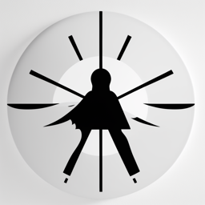
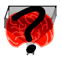

| 근래의 상태창(2023.06.20~) | |||
|---|---|---|---|
| Icon | 버프 이름 | 효과 | 설명 |
|  | 복귀자 | (트위터) 월간 트윗 수치 +30% | 트위터 활동량 늘리는중. 많이 소란스럽다. |
|  | 생체분류기 | (트위터) 리스트 활동 수치 : 15 | 리스트 분류작 진행증. 자신이 어떤 리스팅에 속해 있는지는지 직접 확인가능하다. |
| 정신나간 | 프로젝트당 정신소모율 : +10% | 점점 늘어나는 프로젝트에 미쳐가는중. 때때로 무슨짓을 저지를지 모른다. |
|
| 무너지는 경제 | 주간 소비제 증가율 : 6% 주간 자원휙득 감소율 : 5% |
경제 불황의 여파가 이곳까지 덮쳤습니다. 빨리 대책을 세우지 않으면 폐사할것입니다. |
|
| 놓치지 않는다 | (트위터) 맞팔로우 확률 : 90% | 어떠한 작은 인연이라도 절대 놓치지 않습니다. 스쳐지나가 잊는 날이 올지라도, 최소 한번을 둘러봅니다. |
|